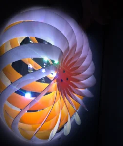
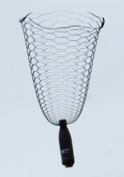
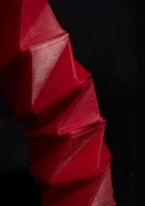

Mécanique multi-échelle
Connect local mechanisms to global material and structural response.

Métamatériaux mécaniques
Connect microstructure, experiments, and simulations to predict behavior.

Structures multistables
Use geometry and mechanics to switch between stable configurations.

Biomimétique et les systèmes bio-inspirés
Design adaptive and deployable structures.
Structures déployables inspirées d'origami et kirigami
Design adaptive and deployable structures.
Robotique souple
Design adaptive and deployable structures.

Interactions fluide-structure
Study interactions between flows and flexible lightweight structures.

Fabrication additive
Fabricate complex materials, devices, and structures with controlled geometry.

Fabrication additive de composites intelligents
Combine fabrication, material design, and responsive functionality.
Jumeaux numériques et IA guidée par la physique
Build reliable routes for functional materials and systems.